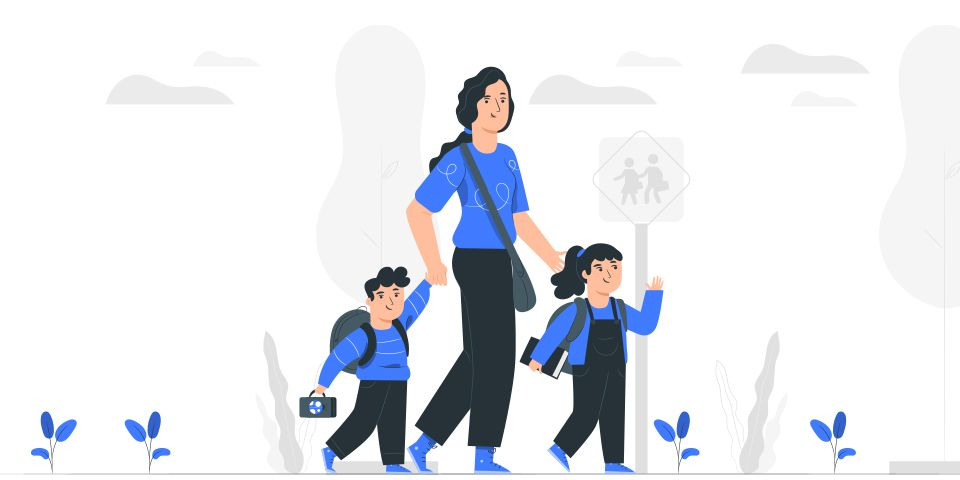

Ebeveynler, çocukların okul öncesi dönemdeki eğitiminde aktif bir rol oynayabilirler ve çocukların gelişimine katkıda bulunabilirler. İşte ebeveynlerin okul öncesi dönem eğitiminde nasıl aktif rol oynayabilecekleri ve nasıl katılabilecekleri hakkında bazı öneriler: Okul Öncesi Eğitim Kurumlarına Katılma: Ebeveynler, çocuklarını okul öncesi eğitim kurumlarına kaydederek çocukların sosyal ve akademik becerilerini geliştirmelerine yardımcı olabilirler. Ebeveynler, okul öncesi eğitim kurumları ile işbirliği yaparak çocuklarının ilerlemesini takip edebilirler. Evde Aktiviteler Planlama: Ebeveynler, evde çocuklarına okul öncesi döneme uygun aktiviteler planlayabilirler. Kitap okuma, blok oyunları, resim yapma, müzik dinleme ve dans etme gibi aktiviteler, çocukların motor, dil ve sosyal becerilerini geliştirmelerine yardımcı olabilir. Sosyal Becerileri Geliştirmek: Ebeveynler, çocuklarının sosyal becerilerini geliştirmelerine yardımcı olabilirler. Çocukları, arkadaşlarıyla oyun oynama, grup etkinliklerine katılma ve sosyal etkileşimleri teşvik ederek sosyal becerilerini geliştirebilirler. Dil Becerileri Geliştirmek: Ebeveynler, çocuklarının dil becerilerini geliştirmek için etkili bir şekilde iletişim kurmalıdırlar. Kitap okuma, hikaye anlatma, şarkı söyleme gibi etkinlikler, çocukların kelime dağarcıklarını ve anlama becerilerini artırarak dil becerilerini geliştirir. Duygusal Destek Sağlamak: Okul öncesi dönemde çocukların duygusal ihtiyaçları çok önemlidir. Ebeveynler, çocuklarının duygusal ihtiyaçlarını karşılayarak özgüvenlerini ve özerkliklerini artırabilirler. Sonuç olarak, ebeveynler, çocukların okul öncesi dönem eğitiminde aktif bir rol oynayabilirler. Okul öncesi eğitim kurumlarına katılım, evde aktiviteler planlama, sosyal becerileri geliştirme, dil becerileri geliştirme ve duygusal destek sağlama gibi yöntemler, ebeveynlerin çocukların gelişimine katkıda bulunmasına yardımcı olabilir.